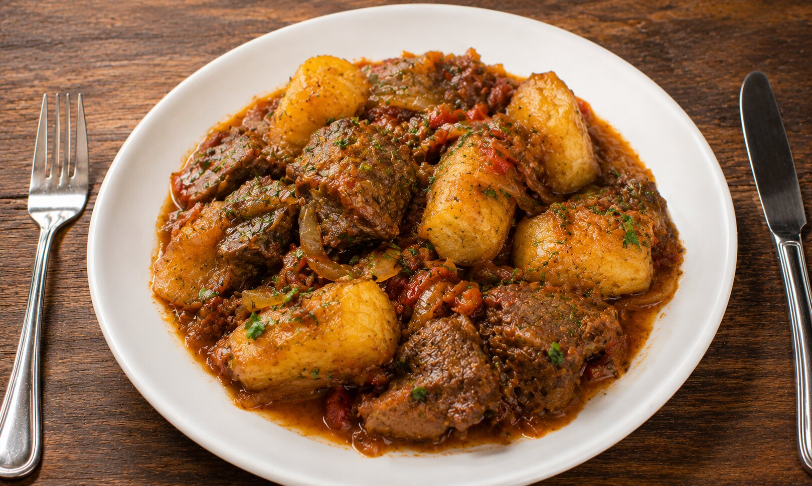

Home
Matooke Recipe

Description
A traditional Ugandan dish made with green plantains (matooke) cooked in a rich, spicy sauce with meat or vegetables.
Ingredients
- Green plantains (matooke) (1 pound)
- Beef or mutton (1 pound)
- Onions (2 large)
- Garlic (3 cloves)
- Ginger (1 inch piece)
- Tomatoes (2 medium)
- Cooking oil (3 tablespoons)
- Spices (1 tablespoon)
- Salt and pepper (to taste)
Steps
- Peel the green plantains and cut them into chunks.
- Heat oil in a pan and sauté onions until golden brown.
- Add garlic, ginger, and spices to the pan and cook for a minute.
- Add the meat and cook until browned.
- Stir in tomatoes and cook until they form a sauce.
- Add the plantain chunks to the sauce and cook until tender.
- Season with salt and pepper to taste.
- Serve hot with a side of rice or ugali.
© 2026 Odin Recipes. All rights reserved.
Designed by Muyivu Shafiq